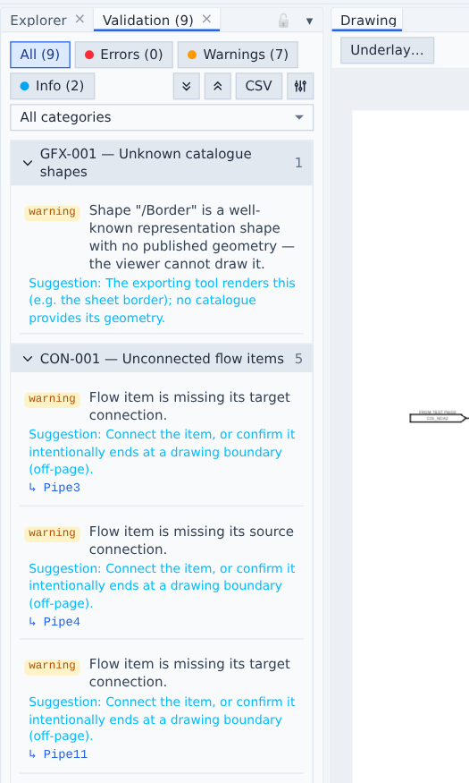
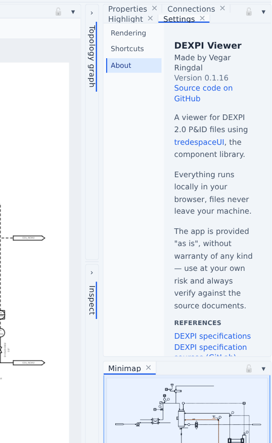

Validation
Every loaded document is validated immediately; the Validation tab shows the count and auto-focuses when a document has findings.

Rule families
Rules are grouped in five categories — see the full rule reference:
- Schema (SCH) — XML integrity: duplicate/dangling ids, identifier and reference syntax from the DEXPI XML Schema.
- Graphics (GFX) — drawing topology: unresolvable catalogue shapes, undrawable connectors, missing extent.
- Connectivity (CON) — engineering topology: unconnected flow items/nodes/nozzles, nominal-diameter mismatches at connection points, piping-class changes without a PropertyBreak.
- Model (MDL) — model-driven: every object checked against the DEXPI information model (unknown classes/properties, missing required properties, illegal enumeration literals, reference cardinality and target classes). The model version is taken from the document's
data.dexpi.orgImport URIs; profile extension classes are honoured through their declared supertypes. - Meta data (META) — template attribute references that resolve to nothing.
Working with findings
- Filter by severity and category; groups collapse per rule; CSV exports the findings.
- Click a finding's object link to select and zoom to it.
- The severity configuration (sliders icon) overrides any rule's severity — Error / Warning / Info / Ignore — persisted across sessions.
Per-object findings
The Properties panel lists the selected object's own findings in an Issues section, and the Inspect panel paints affected cards with severity-colored borders and issue rows.
